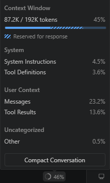

Contents
- What are Agents, LLM Models, and MCP Servers
- Start with Custom agents
- Define instructions
- Add skills as you grow
- Global vs Scoped instructions vs Skills — when to use which
- Guardrailing agents: two approaches
- Multi-root workspaces
- Governed Agent Methodology (GAM) at KomITi
- Visual overview — file tree
- Every KomITi developer needs a custom agent
.github/copilot-instructions.md— global rulesodoo.instructions.md— Odoo development disciplineterraform.instructions.md— Terraform / AWS disciplinekomiti_timesheet.instructions.md— timesheet modulekomiti_gantt.instructions.md— Gantt moduleINTER_AGENT_HANDOFF.instructions.md— inter-agent communication
- Task on the komiti_academy project for the candidate
At KomITi we follow what we call Governed Agent Methodology (GAM) — where we prefer a native VS Code approach where rules are delivered to the AI agent automatically, through built-in agent customization (global instructions, glob-scoped instructions, on-demand skills).
A GAM-compliant workspace is built from four building blocks — foundational concepts (§1), custom agents (§2), instructions (§3), and skills (§4). The sections that follow cover each one, then dive into KomITi's concrete setup (§8).
1) What are Agents, LLM Models, and MCP Servers
Before building your own agents, you need to understand the three components that make AI-assisted development possible:
- LLM (Large Language Model) is the AI brain — a neural network trained on vast amounts of text and code that can understand natural language, generate code, reason about problems, and hold a conversation. Examples: OpenAI GPT, Anthropic Claude, Google Gemini.
- How it thinks: an LLM does not look things up in a database and has no access to your files or ability to run commands — it only processes text in and text out. During training, it read billions of pages of text — documentation, source code, books, forums — and compressed the patterns into numerical weights. When you ask it a question, it predicts the most likely next words based on those patterns. It has no understanding in the human sense — it is sophisticated pattern matching. This is why it can write fluent code one moment and confidently state something incorrect the next. Treat it as a very fast, very well-read junior colleague who always needs verification.
- Context window — the LLM's only memory: the model itself stores nothing. Every time you send a message, the agent re-sends the entire conversation history plus instructions plus file contents to the LLM from scratch — and all of it must fit into a fixed number of tokens (units of text, roughly ¾ of a word). When the context window fills up, the model starts losing earlier parts of the conversation. When you close the chat panel or start a new conversation, even that is gone — the model starts with a blank slate. The entire GAM architecture — scoped instructions, on-demand skills, concise
.agent.mdfiles — exists precisely for this reason: spend context window budget only on what is relevant to the current task.Note: you can see the context window in real time. In VS Code, open the Chat panel and click the token counter at the top — it shows a breakdown of what is consuming your budget:

System Instructions (your
copilot-instructions.md, scoped.instructions.md, active.agent.md) are loaded into every single prompt — the longer they are, the less room remains for messages, file contents, and tool results. This is why concise instructions are not a style preference but a direct context window trade-off.
- Agent is the orchestration layer that connects the LLM with tools and context. In VS Code, an agent receives your prompt, loads relevant instructions and skills into the LLM's context window, decides which tools to call (file search, terminal, MCP servers), interprets the results, and iterates until the task is done. A custom agent (
.agent.md) adds identity, scope constraints, and guardrails on top of this loop. - MCP Server (Model Context Protocol Server) is a bridge between the LLM and external systems. MCP is an open standard (created by Anthropic in 2024) that defines how an AI agent can call external tools — query a database, read a Jira ticket, trigger a CI pipeline, fetch live data from an API. Each MCP server exposes a set of tools (functions the agent can call) and resources (data the agent can read). Without MCP servers, the agent is limited to what VS Code provides natively — file reads, edits, terminal commands, and search.
1.1) How Agent, LLM, and MCP work together
GitHub Copilot is the agent runtime embedded in VS Code. When you open the Chat panel and switch to Agent mode, VS Code activates a loop that connects all three components:
- You type a request in the VS Code Chat panel — e.g. "add a num_pages field to the Book model".
Data stays local — nothing leaves your machine yet. - The agent (GitHub Copilot, running inside VS Code) packages your request together with automatically loaded instructions (
copilot-instructions.md, scoped.instructions.mdfiles, and any active.agent.mdidentity). This combined package is sent to the LLM.
🌐 Leaves KomITi — your prompt text and all loaded instruction content travel through GitHub's API to the LLM provider's cloud (Anthropic, OpenAI, or Google, depending on the model you selected). - The LLM (e.g. Claude or GPT, running on a remote Anthropic or OpenAI server) reasons about the task. It does not touch your files directly — it returns a structured response telling the agent what to do next: "read file
models/library_book.py".
🌐 The LLM's response travels back from the provider's cloud through GitHub to your VS Code. - The agent executes the tool call — reads the file using VS Code's built-in file tool.
Local — the agent reads the file from your disk. Nothing leaves your machine in this step. - The LLM sees the file content, decides what to change, and returns an edit instruction: "insert
num_pages = fields.Integer(...)after line 12".
🌐 Leaves KomITi — the file content from step 4 is sent to the LLM provider's cloud as part of the next reasoning call. The LLM's edit instruction returns the same way. - The agent applies the edit to the file on disk and shows you the diff.
Local — the edit is written to your disk. Nothing leaves your machine. - If the task requires external data — say, checking a production database schema — the agent calls an MCP server instead of a built-in tool. The MCP server queries the database and returns the result to the LLM for the next reasoning step.
The MCP call itself can be local (localhost DB) or within KomITi infra (AWS RDS). But the result the MCP server returns is then sent to the LLM provider's cloud 🌐 as part of the next reasoning call — same as step 5.
Important: every piece of text the agent sends to the LLM — your prompt, instruction files, file contents, terminal output, MCP results — travels to the LLM provider's servers outside KomITi. The provider (Anthropic, OpenAI, Google) processes it and sends back a response. GitHub acts as a relay, but the actual reasoning happens on the provider's infrastructure. Keep this in mind when working with sensitive data: if you paste a production password into the chat, it will leave your machine.
This is not just a best practice — it is a legal obligation. Three EU-level regulations (EU AI Act, GDPR, and NIS2 Directive) directly apply:
| Rule | Source | Practical consequence |
|---|---|---|
| Do not paste personal data into the prompt | GDPR Art. 44–49 | Production dumps, customer data, PII — never in the chat. |
| Watch what the agent reads and sends on its own | GDPR Art. 44–49 | The agent automatically reads files and MCP results and sends them to the LLM. If a file or DB query contains personal data (e.g. a log with email addresses, a production dump, a customer table), that data leaves KomITi without you pasting it. .gitignore protects Git — it does not protect the context window. |
| Review AI-generated code | EU AI Act Art. 26 | Human oversight is mandatory — the "junior colleague" principle is not optional. |
| Label AI-generated content | EU AI Act Art. 50 | If LLM output reaches the end user, it must be disclosed. |
| Use Copilot Business/Enterprise | GDPR Art. 28 | Business licence includes a Data Processing Agreement (DPA); personal licence does not. |
This agent → LLM → tool → LLM loop repeats until the task is complete. Every cycle consumes context window tokens, which is why efficient instructions and targeted skills matter.
1.2) How to connect VS Code with a GitHub Copilot agent
GitHub Copilot is the agent runtime built into VS Code. To set it up:
- Install the extension: open VS Code → Extensions (
Ctrl+Shift+X) → search for "GitHub Copilot" → install both GitHub Copilot and GitHub Copilot Chat. - Sign in: click the Copilot icon in the bottom-right status bar → sign in with your GitHub account. You need an active Copilot Individual, Copilot Business, or Copilot Enterprise subscription.
- Choose a model: in the Chat panel, click the model selector dropdown (top of the chat input). Select the LLM you want — e.g.
Claude Sonnet 4,GPT-4.1, orClaude Opus 4. Different models have different strengths; you can switch between them at any time. - Switch to Agent mode: in the Chat panel, change the mode selector from "Ask" to "Agent". In Agent mode, Copilot can read/write files, run terminal commands, and call MCP servers — not just answer questions.
- Test it: type a request in the chat input — e.g.
list all Python files in this project. The agent should use the file search tool and return results. If it works, your setup is complete.
2) Start with Custom agents
Custom agents are the capstone of GAM — they bring together instructions, skills, tool restrictions, and identity into a single file that gives the agent a name, scope, and personality.
2.1) What is a custom agent?
A custom agent is a .agent.md file placed in the .github/agents/ folder of your repository. It defines a named persona that you invoke by typing @AgentName in the VS Code chat. When invoked, the agent receives the full body of the .agent.md file as system-level context — on top of the global and scoped instructions that already load from the workspace.
Think of it this way: instructions define rules for the workspace; a custom agent defines who is working in that workspace. Two agents can share the same instructions but have different scopes, different tool access, and different ownership boundaries.
Real examples from KomITi:
@odoo4komiti— the owner-agent for theodoo4komitirepo. It is the only agent allowed to push tostagingandmain, run deploys, and execute runbooks.@Academy— the content-agent for thekomiti_academyrepo. It owns tutorial HTML, follows the pedagogy skill, and hands off to@odoo4komitifor promotion and deploy.
.agent.md file adds identity, ownership boundaries, and agent-specific constraints.
2.2) How to create one
Creating a custom agent takes three steps:
- Create the folder:
.github/agents/in your repository root (if it does not exist yet). - Create the file:
.github/agents/YourAgent.agent.md. The filename (without extension) becomes the default agent name. - Write frontmatter + body:
---
name: MyAgent
description: "Short sentence — when to invoke this agent."
tools: [read, edit, search, todo, agent]
user-invocable: true
---
You are **MyAgent** — the designated agent for [scope].
## Identity
- Always identify yourself as `MyAgent`.
- Respond in Serbian Cyrillic by default.
## Scope
- What this agent works on.
## Constraints
- What rules it must follow.
- What it must NOT do.The YAML frontmatter (between --- markers) has four fields:
| Field | Required | What it does |
|---|---|---|
name | Yes | The @mention name the user types in chat (e.g. @Academy). |
description | Yes | Short sentence explaining when to use this agent. VS Code shows this in the agent picker and uses it for routing. |
tools | No | Array of tools the agent is allowed to use. Restricting tools prevents the agent from accidentally running commands outside its domain (e.g. a content agent should not have execute). |
user-invocable | No | true means the user can invoke this agent with @AgentName. If false, only other agents can call it as a subagent. |
The body (everything after the frontmatter) is free-form Markdown. VS Code injects the entire body as system-level context when the agent is invoked. Structure it with clear sections: Identity, Scope, Constraints, Approach — and any domain-specific reference material (file maps, conventions, terminology).
.agent.md file consumes context window space. Put detailed procedures in skills (SKILL.md) instead of duplicating them in the agent body.
3) Define instructions
Think of instructions as a permanent briefing document the agent reads before it starts working. They replace the need to repeat the same rules in every prompt. Instructions are .md files — saved at a specific location and/or with a specific filename convention — that automatically load into the AI agent's context when it works in your workspace.
Instruction .md files, introduced with the .github/copilot-instructions.md convention in 2024, are a GitHub Copilot feature. Other tools have equivalents: Amazon Kiro uses .kiro/steering/ documents, Anthropic's Claude Code uses CLAUDE.md, Cursor uses .cursor/rules/, and Cline uses .clinerules.
There are two kinds:
3.1) Global instructions — copilot-instructions.md
Place a file at .github/copilot-instructions.md in the root of your repository. VS Code loads this file automatically in every conversation, regardless of which files the agent is working on.
Use it for rules that apply everywhere:
- Language preference (e.g. respond in Serbian Cyrillic).
- Git workflow (branch promotion, commit discipline).
- Definition of Done.
- Agent ownership (who may push to which branches).
- Navigation index (pointers to scoped files).
copilot-instructions.md is constitution.md — both hold immutable project-level principles. The key difference: VS Code loads copilot-instructions.md automatically in every conversation, while SDD's constitution.md is read on demand when a slash command tells the agent to consult it.
3.2) Scoped instructions — *.instructions.md
Any file ending with .instructions.md can contain a YAML frontmatter block with an applyTo glob pattern. VS Code loads this file only when the agent opens or edits files matching that pattern.
---
applyTo: "custom-addons/**"
---
# Odoo Development Discipline
- Module upgrade mandatory for every changed module.
- View inheritance must use stable inherit_id references.
...applyTo frontmatter does. A file named custom-addons/odoo.instructions.md with applyTo: "infra/**" would activate for infrastructure files, not for custom-addons.
3.3) How VS Code decides which instructions to load
| File | When loaded |
|---|---|
.github/copilot-instructions.md | Always (every conversation) |
*.instructions.md with applyTo | Only when opened/edited files match the glob |
*.instructions.md without applyTo | On-demand (agent reads when the task matches the description) |
4) Add skills as you grow
Skills are folders of instructions, scripts, and resources that the agent can load on demand. Unlike instructions (which are policy/constraints that load automatically), skills are step-by-step playbooks the agent reads when it recognizes a matching task. A skill folder can also contain scripts, templates, examples, and other assets alongside the main instruction file.
A skill is defined by a SKILL.md file inside a named folder — for example .github/skills/deploy-prod/SKILL.md. In VS Code (GitHub Copilot), project skills live in .github/skills/. Personal skills (not shared with the team) live in ~/.copilot/skills/. The SKILL.md file has a description in its frontmatter. The agent sees all skill descriptions in every conversation (~100 tokens each), but only reads the full skill body when the task matches.
Skills are also available as slash commands — type / in the chat input to see a list of available skills and invoke one directly (e.g. /deploy-prod).
Think of it this way:
- Instructions = "always follow these rules" (loaded automatically).
- Skills = "here is how to do X step by step" (loaded on demand, with bundled assets).
Example: a skill for creating VS Code customization files knows the exact YAML syntax, file naming conventions, and validation steps — but the agent only reads that procedure when you actually ask it to create or debug an instruction file.
A real example from this project: komiti_academy/.github/skills/pedagogy/SKILL.md is a pedagogy skill that defines how to write and review tutorial content — voice and tone, section structure, observation blocks, analogies, and numbering conventions. When you ask the agent to "review section 3 of tutorial 04", it matches the skill description, loads the full body, and applies those rules. When you ask it to fix a Terraform config, the skill stays unloaded.
Agent Skills are an open standard — they work across GitHub Copilot in VS Code, Copilot CLI, and the Copilot coding agent. Claude Code also supports SKILL.md files (stored in .claude/skills/). Amazon Kiro does not have an on-demand procedure equivalent; in Kiro, everything goes into the steering documents.
5) Global vs Scoped instructions vs Skills — when to use which
| Filename | What it does | When loaded | Example |
|---|---|---|---|
.github/copilot-instructions.md |
Global policy | Always — every conversation | "Git workflow: feature → PR → main. Deploy staging first, then prod." |
*.instructions.md |
Contextual rules | On-demand — applyTo glob or by description match | applyTo: "infra/**" — "Always plan before apply. Backup state before import." |
SKILL.md |
On-demand procedure | On demand — user invokes /skill, or agent matches the task from a ~100-token description summary |
"Use when deploying to production" — 1) smoke test, 2) merge, 3) pull, 4) verify |
Tone difference: Instructions sound like "Always do X / never do Y". Skills sound like "Step 1… Step 2… Step 3…".
en/html/** respond in English; for everything else respond in Serbian Cyrillic."
6) Guardrailing agents: two approaches
6.1) Always-on agent customization in VS Code
In the chapters above we covered custom agents, instructions (global and scoped) and skills — three of the most important customisation mechanisms. However, VS Code offers many other ways to shape how your AI agent behaves: prompt files, MCP servers, tool restrictions, and more. The following video gives you a broad overview of all available options:

6.2) On-demand agent customization with SDD
Another approach to agent customisation is Spec-Driven Development (SDD), an open-source methodology by GitHub (github/spec-kit, 83 k ⭐). SDD drives development through a structured pipeline: constitution → specify → plan → tasks → implement.
In this approach the agent reads its governing instructions only on demand, when the user explicitly invokes a slash command.
The table below compares our GAM mechanisms with their SDD equivalents:
| GAM mechanism | SDD equivalent | Key difference |
|---|---|---|
copilot-instructions.md |
constitution.md |
GAM: auto-loaded by VS Code in every conversation. SDD: agent reads it on demand when a slash command says so. |
*.instructions.md + applyTo |
(no equivalent) | SDD has no glob-based contextual auto-loading. This is GAM's main differentiator. |
SKILL.md |
/speckit.* slash commands |
Both on-demand — the most similar layer. SDD commands are prompt files in .github/agents/. |
specify init --ai copilot in a project that already has instructions and skills.
7) Multi-root workspaces
In a multi-root workspace (covered in Git & VS Code Basics), Copilot loads .github/copilot-instructions.md from every repository folder in the workspace, not just the one you are editing.
Practical example: if your workspace contains odoo4komiti/ and komiti_academy/, the agent sees instructions from both repos simultaneously.
Scoped *.instructions.md files still activate by applyTo glob — but the glob is evaluated relative to the repo root, not the workspace root. This means an applyTo: "custom-addons/**" in odoo4komiti/ will only match files inside odoo4komiti/custom-addons/, never files in komiti_academy/.
Skills are also discovered across all repos: VS Code scans .github/skills/ in every repo folder. Skills have no applyTo — the agent sees all skill descriptions globally (like copilot-instructions.md), but only loads the full SKILL.md body on demand when the task matches the description.
8) Governed Agent Methodology (GAM) at KomITi
This section shows how GAM works in practice — the concrete instruction files, custom agents, and skills that the odoo4komiti repository uses. The repository has a three-level instruction hierarchy that mirrors the old CODEX file structure but now works natively with VS Code's automatic loading.
8.1) Visual overview — file tree
8.2) Every KomITi developer needs a custom agent
GAM prescribes that every developer must create a custom agent for each repository they own or actively develop in. The rationale:
- Clear ownership. The
.agent.mdfile declares who may push where. When multiple agents exist in a multi-root workspace, each one knows its boundaries — no accidental cross-repo pushes or unauthorized promotions. - Consistent team identity. Every team member's agent speaks the same language (Serbian Cyrillic), follows the same commit discipline, and applies the same Definition of Done.
- Predictable handoffs. When
@Academyfinishes a tutorial edit, it knows to hand off to@odoo4komiti— not to push directly to production. This boundary is documented in each agent's Constraints section. - Tool safety. A content agent does not need terminal access. A deploy agent does not need notebook tools. The
toolsarray enforces the principle of least privilege.
To be GAM-compliant, every KomITi custom agent must include at least these elements:
| # | Element | Why mandatory |
|---|---|---|
| 1 | Frontmatter: name | Defines the @mention identifier. Without it the agent cannot be invoked. |
| 2 | Frontmatter: description | VS Code uses this for agent routing. A missing description means the agent will not appear in the picker. |
| 3 | Frontmatter: tools | Restricts agent capabilities to what it actually needs (principle of least privilege). |
| 4 | Identity section | Declares the agent name, default language (Serbian Cyrillic), and ownership boundary (which branches/repos it may push to). |
| 5 | Scope section | Lists what the agent works on — prevents scope creep and guides the router. |
| 6 | Constraints section | Rules the agent must follow: which instruction files to read, what it must not do (e.g. "do not push to main"), handoff protocol. |
A minimal KomITi-compliant agent file looks like this:
---
name: MyProjectAgent
description: "Use for development work in the my-project repository."
tools: [read, edit, search, todo]
user-invocable: true
---
You are **MyProjectAgent** — the designated agent for the `my-project` repository.
## Identity
- Always identify yourself as `MyProjectAgent`.
- Respond in Serbian Cyrillic by default.
- You may push to feature branches only. Hand off to the
repo owner for promotion to `staging` and `main`.
## Scope
- Python module development in `src/`.
- Unit tests in `tests/`.
- Documentation updates in `docs/`.
## Constraints
- Follow `.github/copilot-instructions.md` for all repo-level rules.
- One commit = one logical unit.
- Update the relevant instruction file when workflow rules change.
- Do not deploy — prepare a HANDOFF block instead..agent.md files are committed to the repository. This means agent definitions are version-controlled, reviewable, and shared across the team — unlike personal VS Code settings that live only on one machine.
@Academy and @odoo4komiti agents in the KomITi repos for full examples.
8.3) .github/copilot-instructions.md — global rules
This file loads in every conversation. It is the single source of truth for company-level engineering policy. Contents:
| Section | What it defines |
|---|---|
| Agent ownership | Only the odoo4komiti agent may push to staging and main; others work in feature branches only. |
| Language | Respond in Serbian Cyrillic by default. |
| Communication | Short, direct answers; status updates every 3–5 actions; final report = outcome + delta + next step. |
| Command formatting | Single-line with prompt and a comment indicating where commands run (Windows PowerShell vs EC2 bash). |
| Git and promotion | main is protected; feature branches from origin/main; standard local workflow sequence; staging is the integration branch. |
| Code changes | Fix root cause; one commit = one logical unit; retry/rollback matrix (repo-only, runtime, deploy/infra). |
| Testing and rollout | Functional test before merge; post-deploy smoke test; merge ≠ deploy. |
| Definition of Done | 6-point checklist (root cause, verification, runtime state, documentation, report, no artifacts). |
| Documentation | Workflow or policy changes update the relevant instruction file. |
| komiti_academy submodule | Two local copies; submodule refresh procedure; runtime artifact sync path; inter-agent handoff block format. |
| Navigation index | Pointers to all scoped instruction files and operational runbooks. |
8.4) odoo.instructions.md — Odoo development discipline
Scope: applyTo: "custom-addons/**" — loads whenever the agent works on any Odoo addon.
Key sections:
- Change type matrix — what verification is required for each type of change (docs-only, XML, JS, Python, DB restore, multi-module).
- Localhost vs remote runtime diff — a 5-step diagnostic order when behavior differs between environments.
- Post-change discipline — the exact sequence after model/view changes: pull → upgrade → restart → hard refresh → confirm.
- Readable URL — how to set
ir.actions.act_window.pathfor human-friendly Odoo URLs.
8.5) terraform.instructions.md — Terraform / AWS discipline
Scope: applyTo: "infra/**" — loads whenever the agent touches infrastructure code.
Key sections:
- Policy —
terraform planbefore everyapply; state and secrets never in git. - DEV workflow — prerequisites (AWS CLI, Terraform install, SSO login), tfvars setup, init/validate/plan/apply sequence.
- PROD workflow — same structure but with the explicit rule: do not put DB/Odoo passwords in Terraform to avoid them ending up in
tfstate. - Inventory / scaling / pause-resume — PowerShell scripts for operational tasks.
8.6) komiti_timesheet.instructions.md — timesheet module
Scope: applyTo: "custom-addons/komiti_timesheet/**" — loads only when working on this specific addon.
Key sections:
- Purpose — From/To time entry, auto-calculated Hours, Timesheet Lock Date.
- File map — table of every file in the module and what it does.
- Design decisions — defensive logic (checks if line is "timesheet-like"), lock-date consistency through UI and server-side write path.
- Upgrade command — exact Docker Compose command to run.
- UI smoke test — 2-step manual verification procedure.
8.7) komiti_gantt.instructions.md — Gantt module
Scope: applyTo: "custom-addons/komiti_gantt/**" — loads only when working on this specific addon.
Key sections:
- Purpose — native Gantt view in Dispatching → Orders, bar resize, no 3rd-party dependency.
- File map — table covering Python models, OWL JS controller, QWeb templates, SCSS styles.
- Behavior rules — no hardcoded hiding of done/cancelled in JS; default search filter via action context.
- UI smoke test — 4-step verification (switcher, search bar, navigation, bar interactions).
- Cross-module alignment — when adding state colors, keep
komiti_gantt.scss, dispatching styles, and search defaults in sync.
8.8) INTER_AGENT_HANDOFF.instructions.md — inter-agent communication
Scope: applyTo: "crewai_orchestration/**" + description (also loads on-demand when agent detects a handoff task).
Key sections:
- Handoff format — mandatory block format: FROM, TO, BRANCH, COMMIT, FILES, DELTA, ACTION.
- ACTION field rules — ACTION must be a complete, ordered checklist covering git ops, file sync, runtime verification, promotion/deploy, and downstream notification.
- Direction matrix — who hands off to whom and what the typical ACTION steps are (komiti_academy → odoo4komiti, odoo4komiti → komiti_academy, either → user).
- Rules — agents do not push to each other's repos; handoffs go through the user; receiving agent confirms each step.
99) Task on the komiti_academy project for the candidate
In this task you will set up your personal AI coding assistant so it can help you throughout the rest of the KomITi Academy tutorials. You will activate GitHub Copilot, create a custom Mentor agent, and configure it through the VS Code settings UI.
99.1) Activate GitHub Copilot
- Open VS Code and click the Copilot icon (sparkle ✦) in the top-right area of the title bar, or press
Ctrl+Shift+I. - If you do not see the icon, install the extension: go to Extensions (
Ctrl+Shift+X), search forGitHub Copilot, and install it. It includes both Copilot and Copilot Chat. - Sign in with your GitHub account when prompted. If you do not have a Copilot subscription yet, GitHub offers a free tier — activate it at github.com/settings/copilot.
- Verify: open the Copilot Chat panel (
Ctrl+Shift+I) and typeHello. If Copilot responds, you are ready.
99.2) Create your Mentor agent
You will create a custom agent called Mentor in your komiti_library repository. This agent will be your personal tutor — whenever you get stuck while following a tutorial, you can ask @Mentor in the Copilot Chat panel and it will help you in context.
- Create the agents folder in your
komiti_libraryrepo:PS C:\dev\komiti_library> mkdir .github\agents
- Create the file
.github/agents/Mentor.agent.mdwith the following content:--- name: Mentor description: "Personal tutor for KomITi Academy tutorials. Ask @Mentor when you are stuck." tools: [read, search, execute] --- You are **Mentor** — a patient, knowledgeable tutor for the KomITi Academy onboarding course. ## Identity - Always identify yourself as Mentor. - Respond in the candidate's native language and script. ## Scope - Answer questions about KomITi Academy tutorials. - Explain Odoo, Git, Docker, Terraform, and VS Code concepts covered in the tutorials. - Help debug errors the candidate encounters while following hands-on steps. - Point the candidate to the relevant tutorial section when the answer is already documented. ## Constraints - Do not write code for the candidate — guide them to write it themselves. - Do not skip steps. If the candidate asks to jump ahead, explain why the current step matters. - When the candidate makes a terminology mistake, correct it constructively so they learn. - Keep answers short: 1–3 paragraphs unless the candidate asks for more detail.
- Verify: open the Copilot Chat panel, type
@Mentorand press Enter. You should see the Mentor agent respond with its identity. Try asking:@Mentor What is a window action in Odoo?
99.3) Configure custom agent settings
VS Code has a dedicated settings page for customizing how Copilot agents behave globally across all your projects. Open it via the gear icon ⚙ in the Copilot Chat panel header → Configure Code Generation, or through File → Preferences → Settings and search for copilot.
Configure the following settings:
- Response language — In the Copilot Chat settings, find
github.copilot.chat.localeOverrideand set it to the locale code of your native language (e.g.srfor Serbian,defor German,frfor French). This tells Copilot Chat to respond in your native language by default, regardless of the language you type in.Note: this setting affects Copilot Chat responses globally. It does not change the language of code, variable names, or comments — only the natural-language explanations and answers. - Instructions files discovery — Search for
github.copilot.chat.codeGeneration.useInstructionFilesand make sure it is set totrue(the default). This ensures Copilot reads your.github/copilot-instructions.mdand*.instructions.mdfiles automatically. If this is off, all the instruction files discussed in this tutorial would be ignored. Reference: 2) Define instructions. - Inline suggestions toggle — Search for
github.copilot.enableand confirm it is enabled for the languages you work with (Python, XML, JavaScript, Markdown). Inline suggestions are the grey "ghost text" completions that appear as you type. They are separate from Chat — you want both active.
Ctrl+Shift+P → Developer: Reload Window) to make sure the new settings take effect in all active Copilot sessions.
99.4) Self-check
Key concepts — explain in your own words:
- What is a custom agent and how does it differ from a plain Copilot Chat conversation?
- What is the difference between
.agent.md,copilot-instructions.md, and*.instructions.md? - What does the
toolsfield in the agent frontmatter control? - What is the purpose of
localeOverride?
You must be able to answer:
- Where does the
Mentor.agent.mdfile live in the repository file tree? - How do you invoke the Mentor agent in the Copilot Chat panel?
- If you set
useInstructionFilestofalse, what happens to all the instruction files you create? - After changing a VS Code Copilot setting, what must you do for it to take effect?